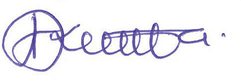

Acknowledgements
The Tanzania Institute of Education (TIE) recognises and values the vital contribution
of all organisations and individuals who participated in designing and developing this
textbook. In particular, TIE wishes to thank the University of Dar es Salaam (UDSM),
the University of Dodoma (UDOM), and the Open University of Tanzania (OUT)
for their invaluable support throughout the process of designing and developing
this textbook. Besides, TIE highly acknowledges the contributions of the following individuals:
Writers:
Ms Neema B. Matingo, Dr Julius Frank & Mr Aidan Bahama
Editors:
Dr Gerald Kimambo & Dr Eliakimu Sane
Designer:
Mr Anthony Asukile
Illustrator: Mr Hance E. Wawar
Coordinator: Ms Neema B. Matingo
TIE also appreciates the contributions of the secondary school teachers and students who participated in the trial phase of the manuscript. Likewise, the Institute would like to thank the Government of the United Republic of Tanzania for fi nancing the writing and printing of this textbook.

Dr Aneth A. Komba
Director General
Tanzania Institute of Education